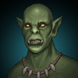
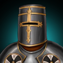
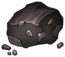
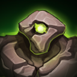
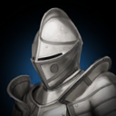

역기획서 · 몬스터
몬스터 38종
Monster_Scriptable 38건 (일반 29, 보스 9). 레벨 0~5 구간, 처치 골드·경험치와 드랍 목록이 있습니다.
전체 표
| 몬스터 | 번호 | 구분 | Lv | 체력 | 물공 | 마공 | 물방 | 마방 | 공속 | 이속 | 사거리 | 골드 | 경험치 | m_Chance | m_Count | 드랍 | |
|---|---|---|---|---|---|---|---|---|---|---|---|---|---|---|---|---|---|
 | 카카 | 1 | 일반 | 1 | 200 | 0 | 0 | 0 | 0 | 0.8 | 1.5 | 1.5 | 100 | 5 | 10 | 5 | 가죽, 나무조각, 검 손잡이 |
| 켈톤 | 2 | 일반 | 1 | 200 | 2 | 0 | 0 | 0 | 0.5 | 1.5 | 1.5 | 103 | 6 | 10 | 5 | 뼈, 못, 해골 | |
| 렛 | 3 | 일반 | 1 | 350 | 3 | 0 | 0 | 0 | 1 | 1.5 | 1.5 | 106 | 7 | 10 | 5 | 고철, 송곳니, 망치 | |
| 캣피쉬 | 4 | 일반 | 1 | 400 | 4 | 0 | 0 | 0 | 1 | 1.5 | 1.5 | 113 | 8 | 8 | 5 | 바늘, 비늘, 은 조각 | |
| 울프 | 5 | 일반 | 1 | 550 | 6 | 0 | 0 | 0 | 1 | 1.8 | 1.5 | 116 | 10 | 8 | 5 | 송곳니, 실타래, 반지조각 | |
| 탈리 | 6 | 일반 | 2 | 1,000 | 5 | 0 | 1,000 | 1,000 | 0.8 | 1.5 | 1.5 | 123 | 15 | 6 | 5 | 나무조각, 금속 판, 하급 제작서 | |
| 아처켈톤 | 7 | 일반 | 2 | 1,000 | 6 | 0 | 1,200 | 1,200 | 0.6 | 1 | 5 | 126 | 15 | 6 | 5 | 뼈, 해골, 고급스틱 | |
| 골렘 | 8 | 일반 | 2 | 2,000 | 15 | 0 | 2,500 | 2,500 | 0.7 | 1.3 | 1.5 | 133 | 15 | 6 | 5 | 못, 고철, 망치, 금 조각 | |
| 미노 | 9 | 일반 | 2 | 2,500 | 25 | 0 | 2,500 | 2,500 | 0.7 | 1.3 | 1.5 | 136 | 15 | 6 | 5 | 가죽, 나무조각, 고철, 정수 조각 | |
| 우르스 | 10 | 일반 | 3 | 5,000 | 0 | 40 | 5,000 | 5,000 | 0.7 | 1.5 | 1.5 | 153 | 20 | 5 | 5 | 하급 제작서, 모루, 최상급 스틱, 고급 제작서 | |
| 카라푸스 | 11 | 일반 | 3 | 5,000 | 0 | 40 | 5,000 | 5,000 | 0.7 | 3 | 1.5 | 156 | 20 | 5 | 5 | 고철, 금 조각, 플레어 스톤, 서광 섬유 | |
| 바포메트 | 12 | 일반 | 3 | 10,000 | 0 | 50 | 5,000 | 5,000 | 1 | 2.5 | 1.5 | 163 | 20 | 5 | 5 | 고급스틱, 은 조각, 고급 제작서, 루나 스톤 | |
| 실프워커 | 13 | 일반 | 3 | 10,000 | 0 | 50 | 5,000 | 5,000 | 1 | 2.5 | 1.5 | 166 | 20 | 5 | 5 | 비늘, 반지조각, 모루, 실프 스톤 | |
| 라바 | 14 | 일반 | 4 | 40,000 | 200 | 0 | 10,000 | 10,000 | 1 | 2.5 | 1.5 | 173 | 40 | 1 | 5 | 해골, 금속 판, 망치, 모루, 라바 스톤 | |
| 칼리탄 | 15 | 일반 | 4 | 100,000 | 500 | 0 | 10,000 | 10,000 | 2 | 3 | 1.5 | 173 | 40 | 0.6 | 5 | 은 조각, 금 조각, 최상급 스틱, 모루, 녹수정, 용접기 | |
 | 레오딘 | 16 | 일반 | 4 | 155,000 | 900 | 0 | 5,000 | 14,000 | 3 | 4.3 | 1.5 | 173 | 40 | 0.4 | 5 | 검 손잡이, 하급 제작서, 최상급 스틱, 고급 제작서, 봉인석, 용접기 |
| 쉐로우 | 17 | 일반 | 4 | 190,000 | 1,500 | 0 | 14,000 | 14,000 | 0.7 | 1.5 | 1.5 | 173 | 40 | 0.35 | 5 | 고철, 고급스틱, 고급 제작서, 서광 섬유, 청연석, 용접기 | |
 | 스톤 | 18 | 일반 | 5 | 290,000 | 0 | 0 | 14,000 | 14,000 | 0 | 1.2 | 1 | 175 | 40 | 0.45 | 5 | 은 조각, 금 조각, 플레어 스톤, 루나 스톤, 성수 |
| 데몬 | 19 | 일반 | 4 | 338,000 | 0 | 2,150 | 18,000 | 18,000 | 0.7 | 5 | 20 | 173 | 40 | 0.33 | 5 | 은 조각, 반지조각, 모루, 서광 섬유, 차원석, 용접기 | |
 | 가디언 | 20 | 일반 | 4 | 608,400 | 5,000 | 0 | 18,000 | 18,000 | 0.7 | 1 | 2.4 | 200 | 60 | 0.33 | 5 | 망치, 금 조각, 모루, 서광 섬유, 마력핵, 용접기 |
| 펌킨 | 21 | 일반 | 0 | 5 | 0 | 0 | 0 | 0 | 0 | 1 | 1 | 200 | 5 | 4 | 1 | 사탕, 호박, 호박 조각, 호박, 펌킨의 상자 | |
| - | 산타 | 22 | 일반 | 0 | 2 | 1 | 1 | 0 | 0 | 1 | 3 | 2 | 200 | 5 | 2.7 | 1 | 딸기, 우유, 초코 |
| - | 토끼 | 23 | 일반 | 0 | 2 | 1 | 1 | 0 | 0 | 1 | 3 | 2 | 200 | 5 | 2 | 1 | 낡은 주머니, 비단, 새해의 정기 |
| 강화켈톤 | 24 | 일반 | 1 | 800 | 3 | 0 | 0 | 0 | 0.5 | 1.5 | 1.5 | 120 | 10 | 10 | 5 | 뼈, 못, 해골 | |
| 강화아처켈톤 | 25 | 일반 | 2 | 1,800 | 8 | 0 | 1,500 | 1,500 | 0.6 | 1 | 5 | 145 | 17 | 6 | 5 | 뼈, 해골, 고급스틱 | |
| 강화바포메트 | 26 | 일반 | 3 | 13,500 | 0 | 63 | 6,250 | 6,250 | 1 | 2.5 | 1.5 | 180 | 26 | 5 | 5 | 고급스틱, 은 조각, 고급 제작서, 루나 스톤 | |
| 강화레오딘 | 27 | 일반 | 4 | 205,000 | 1,125 | 0 | 6,250 | 17,500 | 3 | 4.3 | 1.5 | 270 | 60 | 0.4 | 5 | 검 손잡이, 하급 제작서, 최상급 스틱, 고급 제작서, 봉인석, 용접기 | |
| 강화데몬 | 28 | 일반 | 4 | 420,000 | 0 | 2,688 | 22,500 | 22,500 | 0.7 | 5 | 20 | 275 | 60 | 0.33 | 5 | 은 조각, 반지조각, 모루, 서광 섬유, 차원석, 용접기 | |
| 강화가디언 | 29 | 일반 | 4 | 760,000 | 6,250 | 0 | 22,500 | 22,500 | 0.7 | 1 | 2.4 | 310 | 90 | 0.33 | 5 | 망치, 금 조각, 모루, 서광 섬유, 마력핵, 용접기 | |
| 킹켈톤 | 100 | 보스 | 1 | 450,000 | 0 | 900 | 1,000 | 1,000 | 0.6 | 1.5 | 1.5 | 1 | 1 | 30 | 1 | 회복 각인, 정수 조각, 모루, 해골, 망치 | |
| 브라하 | 101 | 보스 | 2 | 1,200,000 | 2,500 | 0 | 2,000 | 2,000 | 0.85 | 4.5 | 1.2 | 1 | 1 | 30 | 1 | 흡수 각인, 정수 조각, 모루, 고급 제작서, 망치 | |
| 트로거 | 102 | 보스 | 3 | 9,300,000 | 13,000 | 0 | 2,000 | 20,000 | 0.85 | 4 | 1.2 | 1 | 1 | 30 | 1 | 헌터 각인, 정수 조각, 모루, 고급 제작서, 망치 | |
| - | 케르베르 | 103 | 보스 | 3 | 1,000,000 | 3,000 | 0 | 2,000 | 2,000 | 0 | 0 | 3 | 0 | 0 | 0 | 1 | 가죽, 나무조각, 검 손잡이 |
 | 로어드 | 104 | 보스 | 3 | 9,300,000 | 8,000 | 0 | 5,000 | 20,000 | 1 | 4 | 1.2 | 1 | 1 | 30 | 1 | 워리어 각인, 정수 조각, 모루, 고급 제작서, 망치 |
| 킹쉐로우 | 105 | 보스 | 3 | 16,600,000 | 13,000 | 0 | 20,000 | 20,000 | 1 | 1 | 1.2 | 1 | 1 | 30 | 1 | 어쌔신 각인, 정수 조각, 최상급 스틱, 고급 제작서, 망치 | |
| 서큐버스 | 106 | 보스 | 3 | 27,600,000 | 7,000 | 7,000 | 20,000 | 20,000 | 6 | 1 | 6 | 1 | 1 | 30 | 1 | 메이지 각인, 정수 조각, 모루, 고급 제작서, 망치 | |
| - | 이그니토 | 107 | 보스 | 3 | 20,000,000 | 4,000 | 4,000 | 40,000 | 40,000 | 4 | 0 | 50 | 1 | 1 | 0 | 1 | 가죽 |
| 킹가디언 | 108 | 보스 | 3 | 57,291,000 | 14,000 | 14,000 | 20,000 | 20,000 | 0.7 | 1 | 5 | 1 | 1 | 30 | 1 | 팔라딘 각인, 정수 조각, 모루, 고급 제작서, 망치 |
원본: Monster_Scriptable. 이미지는 같은 이름의 스프라이트를 붙였습니다 추정 연결. m_Chance·m_Count의 의미(드랍 확률·수량)는 필드 이름 기준입니다 추정.
체력 곡선
막대 길이는 로그 척도입니다.
드랍·스폰·방치 보상 규칙 (1.13.14 소스 기준)
APK(1.14.0.1)는 IL2CPP라 메서드 본문이 없어서, 원본 저장소의 1.13.14 소스에서 규칙을 읽었습니다. 1.14에서 바뀌었을 수 있습니다.
| 시스템 | 규칙 | 값 | 근거 | |
|---|---|---|---|---|
| 몬스터·드랍·스폰 | 난이도 HP/ATK | x(1+(D-1)*0.7), 메인·일반·m_Level4만 | Monster/Monster.cs:153-157 | |
| 몬스터·드랍·스폰 | 난이도 드랍률 | x(1+(D-1)*0.015) | Monster/Monster.cs:168 | |
| 몬스터·드랍·스폰 | 난이도 골드 | +(D-1)*9 %p | Monster/Monster.cs:420,424 | |
| 몬스터·드랍·스폰 | 드랍 버프 | 호박+10%, 아레나1+10% 곱연산 | Monster/Monster.cs:428-431 | |
| 몬스터·드랍·스폰 | 상자 판정 | Random(0,100)<=finalChance | Monster/Monster.cs:439 | |
| 몬스터·드랍·스폰 | 펌킨 특수 | 0.4% 우편 | Monster/Monster.cs:448 | |
| 몬스터·드랍·스폰 | 재료 드랍 | Chance값 그룹, 그룹가중=Chance, 그룹내 균등 | Item/Item_Mng.cs:123-151 | |
| 몬스터·드랍·스폰 | 기타 드랍 | O_Item 독립판정 후 1개 | Item/Item_Mng.cs:57-81 | |
| 몬스터·드랍·스폰 | 스폰 수 | m_Count, 칭호27=6, 최대 CT(0이면5) | Monster/Spawner.cs:196,207,211,219 | |
| 몬스터·드랍·스폰 | 스폰 반경 | 8 | Monster/Spawner.cs:319 | |
| 몬스터·드랍·스폰 | 치트 감지 | 몬스터 골드>400, EXP>100 | Monster/Monster.cs:92,98 | |
| 오프라인(방치) | 분당골드 | 접속 중 직전 60초 획득(버프 후) | Mng/Data_Mng.cs:135 | |
| 오프라인(방치) | 저장 | 120초마다, 일시정지 시 | Mng/Data_Mng.cs:148; Mng/Off_Mng.cs:28 | |
| 오프라인(방치) | 보상 | 분당골드 x 경과분, 최대 720분 | Mng/Off_Mng.cs:85,92 | |
| 오프라인(방치) | 치트 | G>=400000 / 분당>=800000 | Mng/Off_Mng.cs:63; Mng/Data_Mng.cs:129 |